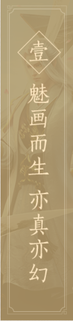
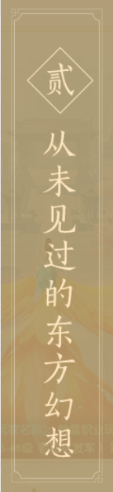
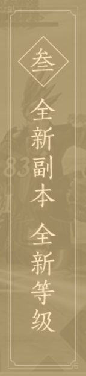
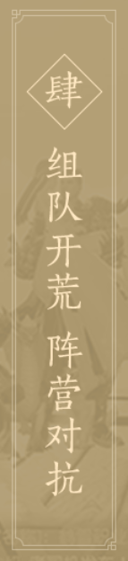
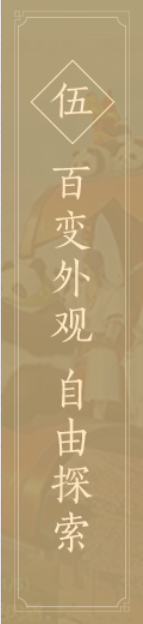

<!DOCTYPE html>
<html lang="en">
<head>
    <meta charset="UTF-8">
    <title>九州海上牧云</title>
    <style>

        body{
            margin: 0;
        }
        .warp{
            width: 1390px;
            height: 624px;
            background: #33ccff;
            margin: 50px auto;  /** 复合式：让整个区域距离上右 50px  下左 自动 */
        }

        .warp img{
            height: 624px;
            width: 140px;
        }

        .item{
            float: left;
            height: 624px;
            width: 830px;

        }

        /*.item:nth-child(1){*/
            /*background: url("images/1.png");*/
        /*}*/


    </style>
</head>
<body>

<!-- 网址、： http://myj.163.com/index.html
 图片 高：624  宽：830
 间隔 10 10
 短   高：624  宽：140

 短 实际
       高：624
       宽：143


排版：4个短的一个图片，间隔4个


新的：去除间隔，一个图片四个短的，
    宽：1390
    高：624


-->


    <div class="warp">
        <div class="item show"> </div>
        <!--<div class="item show"> </div>-->
        <!--<div class="item">  </div>-->
        <!--<div class="item">  </div>-->
        <!--<div class="item">  </div>-->
        <!--<div class="item"> </div>-->
    </div>
</body>
</html>